This document is meant to only serve as a reference! Please let me know if I’ve made any glaring mistakes (I just thought of most of this at 5 AM). I thought I’d explain it really well once, but that means there is a lot of unnecessary elaboration if you already understand these concepts.
There are no final answers in this document for the sake of academic integrity, but if you follow the logic, it will be pretty obvious (I hope).
Let \(x1,x2,⋯,x6\) represent data observed from a random sample of \(n = 6\) taken from a population of values described by the following probability density function. \[ f(x_{i}; \beta) = e^{-(x_{i} - \beta)} \hspace{0.5in} \beta \leq x_{i}< \infty \] This sample/data is used to test the following hypothesis: \[ {\rm H}_{0}: \beta = 2 \hspace{0.5in} {\rm H}_{A}: \beta < 2 \] A statistical test has been developed to test the validity of the above null hypothesis. This tests states the following: Reject the null hypothesis if the smallest data point in the sample, represented by \(X_{Min}\), is less than 2.018.
In other words, reject the null hypothesis if \(X_{Min}<2.018\), given this Probability Density Function:
\[ f(x_{Min}; \beta) = ne^{-n(x_{Min} - \beta)} \hspace{0.3in} \beta \leq x_{Min} \]
Feel free to skip.
“…a constant or variable term in a function that determines the specific form of the function but not its general nature”
Let’s lock down exactly what these equations are supposed to represent. For starters, \(\beta\) is just a parameter. I think of it like it is a ‘consistent’ value related to, but unaffected by the data.
This could be population Standard Deviation, population Mean, etc. something that is not changing.
To use a simple illustration: if we were looking at heights in MDSA students, we assume that when we take a random sample we will get a slightly different group of values every time. But the mean of the MDSA students (the population mean) will not change no matter how we sample. That’s all \(\beta\) is too, some parameter (but we don’t know what).
We’re given a Probability Density Function (PDF; which is the acronym I’ll continue to use), and this is a continuous function (think calculus right away).
So what does this particular PDF look like? We can try plotting: \[ f(x_{i}; \beta) = e^{-(x_{i} - \beta)} \] Like so:
pdf.exploringParameters = function(x,b){
exp(-(x-b))
}And there is only 1 constraint: \[ \beta \leq x_{i}< \infty \] In other words, whatever value we set for b, that needs to be the minimum value for \(x\).
Let’s plot a bunch of different values of \(\beta\):
plotDifferentParameters = function(){
for (b in 1:10){
xSequence = seq(b,b+5,0.5)
plot(xSequence,pdf.exploringParameters(xSequence,b),main=paste("Plot of PDF when beta = ",b),ylab="Probability Density",xlab="Values of X")
}
}
#call the function I just wrote to plot a bunch of different versions of the same graph
plotDifferentParameters()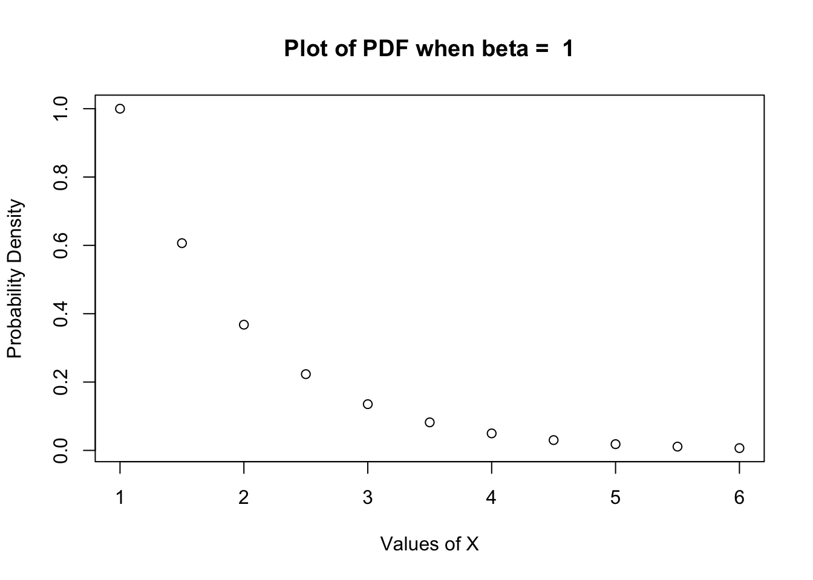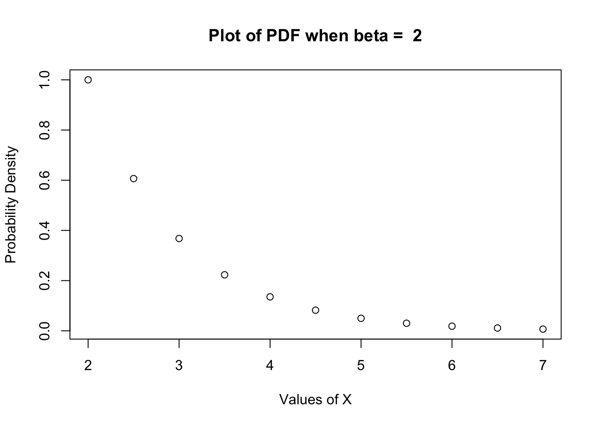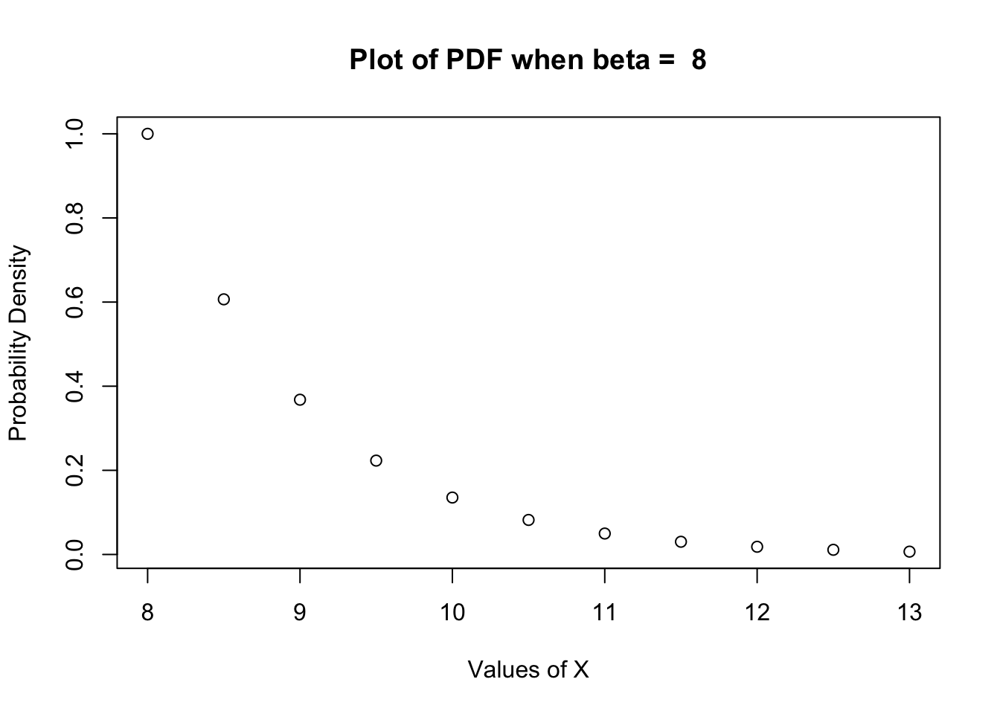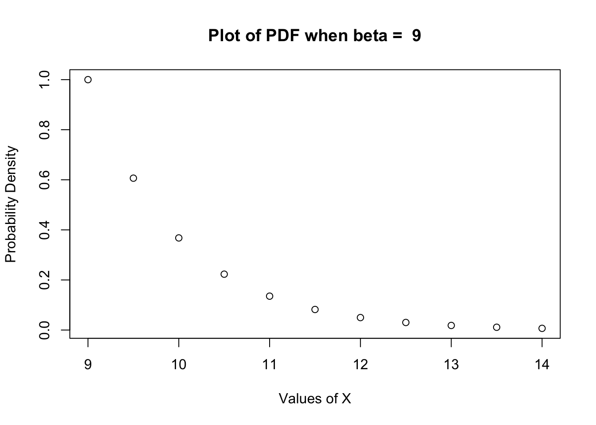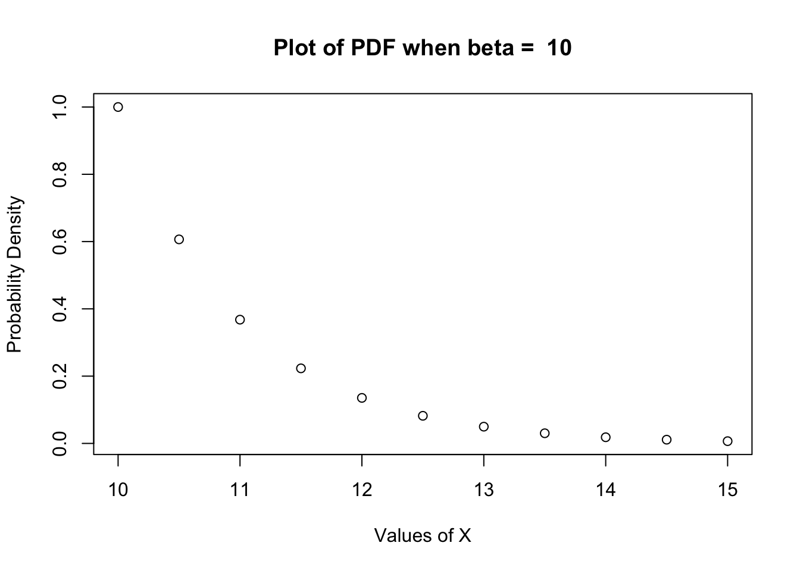
Notice how the values of the y-axis are at a maximum of 1. It is deceptive because you might think that has something to do with probability, but it’s actually just a result of the original equation: \(e^{-(x_{i} - \beta)}\).
If \(\beta = x_{i}\) then you get \(e^0\) which, of course, is 1.
If there is a constant, then that will be the functions value when \(x_{i} = \beta\), so don’t let it trip you up.
For this question, we’re setting \(\beta = 2\) because that’s what we’re assuming this parameter to be (think back to if this was a Mean or Standard Deviation, or some other population parameter).
I’ll define a new function called pdf.betaIsTwo, pretty
obvious naming convention there…
#Same equation, but with only one variable now.
pdf.betaIsTwo = function(x) {
exp(-(x-2))
}And let’s take a look, it’s supposed to be continuous, so I’m adding more points to smooth it out:
xVals = seq(2,10,0.1)
plot(xVals,pdf.betaIsTwo(xVals),type="l",main="Probability Density Function, beta = 2",xaxp=c(2,10,8))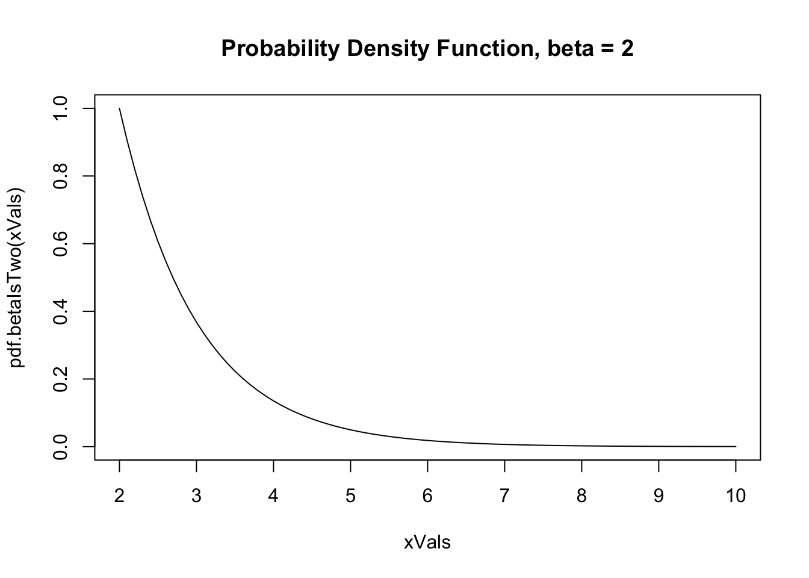
Notice again, the value on the y-axis is 1 when x = 2.
Unlike discrete probabilities, the value at the x-axis is not the probability of that value occurring. And you can’t sum up the value of the PDF at 2 and 3 and 4 and say that is the probability of 2,3 and 4 occurring - a) Because the probabilities would add up to greater than 1 and - b) Because you could divide 3 and 4 with 3.5, and 3.5 and 4 with 3.75… that’s literally how calculus was invented.
When we integrate over a PDF, we get the cumulative probability function. This is the way to find our concept of probability (like.. I don’t know… what is the probability that \(\beta\) will be less than 2, for instance).
plot(xVals,sapply(xVals,function(x) integrate(pdf.betaIsTwo,2,x)$value),type="l",ylab="Cumulative Probability",main="Cumulative Probability Function")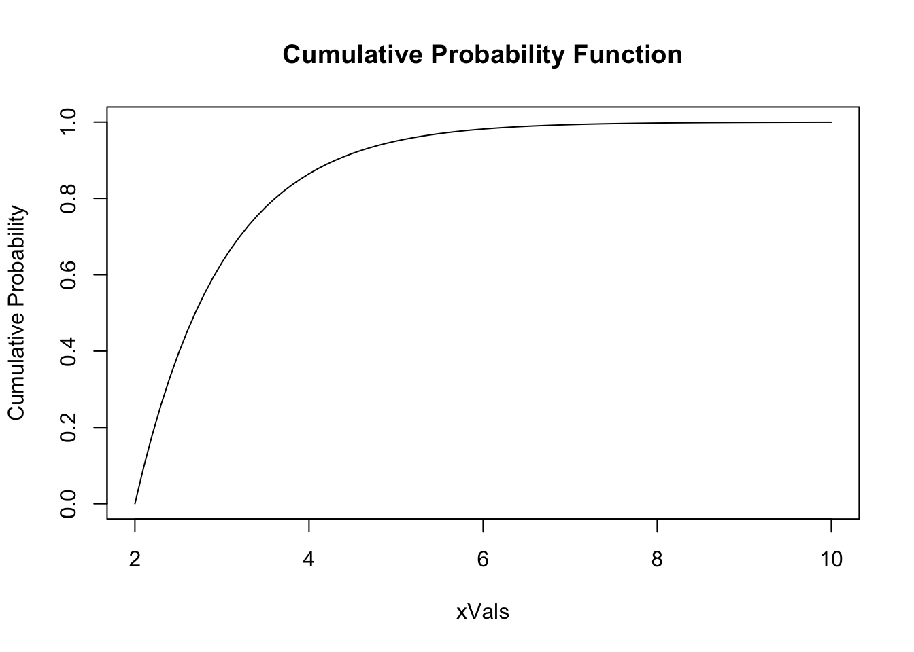
With that we can dive right in:
We’re using a statistic, \(X_{Min}\), to ‘test’ if we should reject the null hypothesis: \(\beta = 2\) and accept the alternate hypothesis: \(\beta < 2\). We’ve also said that if \(X_{Min} < 2.018\), then we will reject the null hypothesis. The test probability density function is: \[ f(x_{Min}; \beta) = ne^{-n(x_{Min} - \beta)} \hspace{0.3in} \beta \leq x_{Min} \] \(n\) is yet another ‘parameter’ in this function. We know that \(n = 6\) (it was in the information given to us), so once again we have a 1 variable equation, which is easy to plot:
pdf.Xmin = function(x) {
6*exp(-6*(x-2))
}
xMinVals = seq(2,3,0.05)
plot(xMinVals,pdf.Xmin(xMinVals),main="Probability Density Function of Xmin statistic")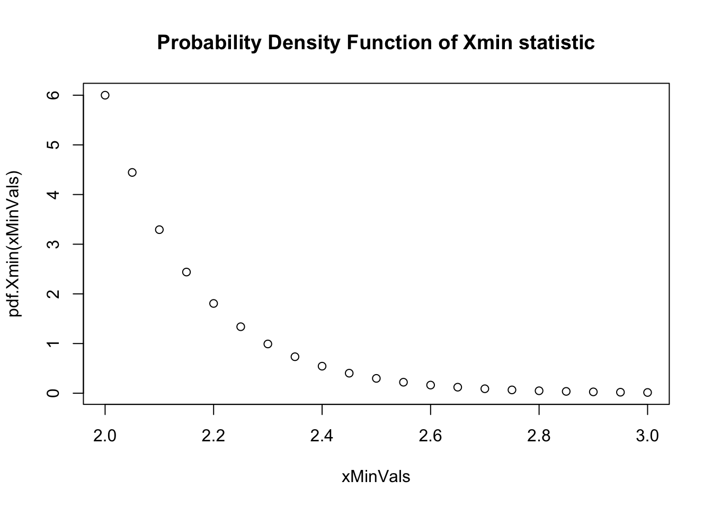
…that \(n\) is a doesn’t actually ‘matter’, run these blocks for yourself.
pdf.XminChangeN = function (x,n){
n*exp(-n*(x-2))
}
plot(xMinVals,pdf.XminChangeN(xMinVals,3),main="Probability Density Function of Xmin statistic, n = 3")plot(xMinVals,pdf.XminChangeN(xMinVals,4),main="Probability Density Function of Xmin statistic, n = 4")plot(xMinVals,pdf.XminChangeN(xMinVals,5),main="Probability Density Function of Xmin statistic, n = 5")Again, don’t mind that the probability at \(X = 2\) is apparently 6. It doesn’t matter. What we care about is, again, the:
Now, hopefully, we can see again that the cumulative probability caps out at 1 (all the possible options combined should always equal 1!)
I’ll also add a line at \(X_{min} = 2.018\). This time, we do care about the intersect of the Cumulative Probability Function with our value, because that wil tell us the cumulative probability of the original PDF for \(X_{Min}\), at a given value of \(X\)
plot(xMinVals,sapply(xMinVals,function(x) integrate(pdf.Xmin,2,x)$value),type="l",ylab="Cumulative Probability",main="Cumulative Probability Function of X-min")
abline(v=2.018,col="green")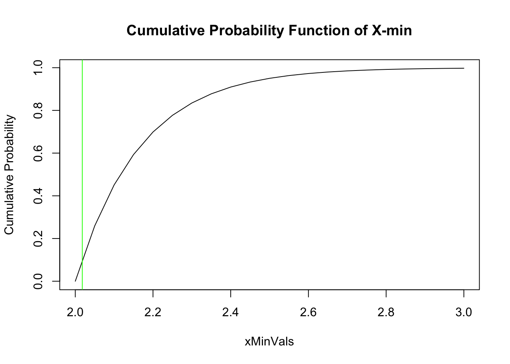
Alpha is just the benchmark we set for ourselves where we are comfortable with saying we haven’t committed a Type I error. So if this test is saying we reject the null hypothesis if \(X_{Min} < 2.018\), then it has already established an alpha level. i.e. alpha is whatever probability the CPF and PDF gives us, at \(X = 2.018\) is \(\alpha\).
If we integrate the PDF of \(X_{Min}\) over the range 2.018 to ‘infinity’ we would be calculating the area under the curve on the right side of the red line:
plot(xMinVals,pdf.Xmin(xMinVals),type='l',main="Probability Density Function of Xmin statistic")
abline(v=2.018,col="red")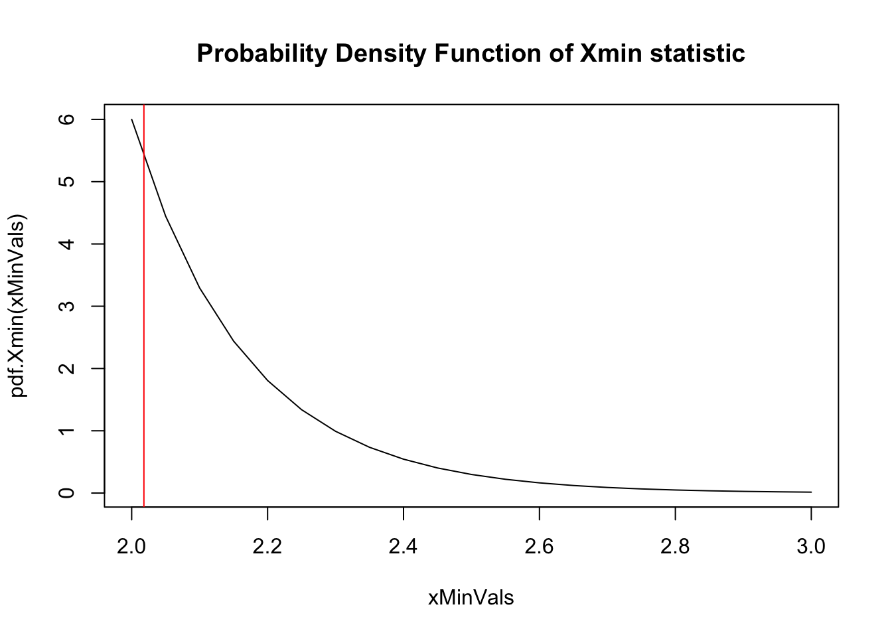
But we want to find the \(\alpha\) for \(X_{Min} < 2.018\), so what do we need to do?
From here on out, things should be more straightforward if you understand how to think about PDFs and CPFs.
Hint: You don’t need to use the sort
function to find \(X_{Min}\) in this
sample…
A better way of understanding:
compute the probability of concluding that \(\beta = 2\) when in fact \(\beta = 1.8\).
is:
what is the probability that our test statistic (\(X_{Min}\)) fails to reject the hypothesis (\(\beta = 2\)), and we don’t accept the alternate hypthesis (\(\beta < 2\)), even if the underlying parameter is actually lower (1.8) and therefore \(\beta < 2\)
It’s sort of a roundabout way of thinking about this question. We’re sort of testing our test.
Earlier, we started by assuming that \(\beta = 2\), and then tried to find out what the probability of getting \(X_{Min} < 2.018\), and therefore concluding the null hypothesis was false (i.e. \(\beta < 2\) is ‘true’), would be.
Again, that’s what \(\alpha\) is. If the probability of our test statistic being < 2.018 was very high, then we would very often conclude that \(\beta < 2\), even if it wasn’t true (Type I error).
Now, we are being asked to do the opposite. If we assume \(\beta = 1.8\), what is the probability that we will conclude \(\beta \nless 2\), even though it has to be because we’re starting with that assumption!
So since \(\beta = 1.8\) is our ‘reality’ now, we should obviously make a new equation (\(n\) is still 6):
pdf.actual = function(x){
6*exp(-6*(x-1.8))
}And, again, we want to find the CPF of this function. Only this time, we’re trying to figure out, what is the probability that we might say \(\beta \nless 2\), even though it is.
So which side of the curve should we be looking?
xVals.adjustedAgain = seq (1.8,3,0.1)
plot(xVals.adjustedAgain,sapply(xVals.adjustedAgain,function(x) integrate(pdf.actual,2,x)$value),type="l",ylab="Cumulative Probability",main="Cumulative Probability Function if beta = 1.8")
abline(v=2,col="red")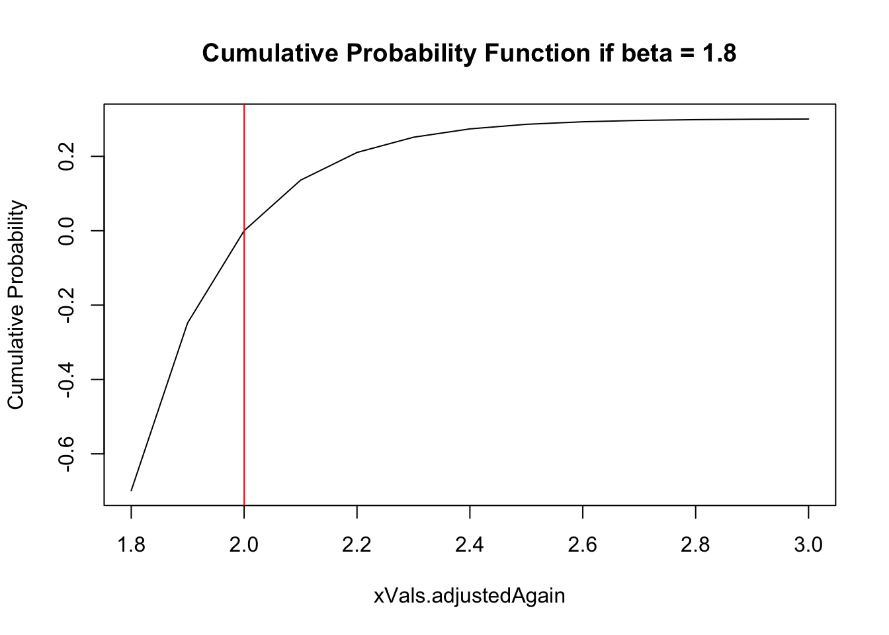
So, with all the work we’ve done up to this point, we should be more than equipped to handle this. We’ve already calculated \(\alpha\) before. We’ve also changed the equation a bunch of times.
I’m sure there are lots of elegant solutions out there, but I just opted for trial and error:
Try a bunch of values for \(X_{Min}\) until… I’ll leave the rest up to you :)
Stats are kind of un-intuitive and it doesn’t help that a lot of these questions are more challenging your English-comprehension than your stats/math knowledge.